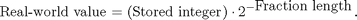
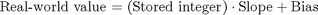
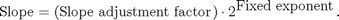
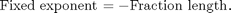
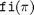
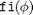
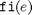

固定小数点の基本
固定小数点数値オブジェクト fi の基本的な使用方法を示します。
目次
- 表記法
- 設定
- 固定小数点の既定の属性
- Signed および WordLength プロパティの指定
- 精度
- データへのアクセス
- DOUBLE(A)
- A.DOUBLE = ...
- INT(A)、A.INT = ...
- 保存整数値と実際値の関係
- BIN(A)、OCT(A)、DEC(A)、HEX(A)
- A.BIN = ...、A.OCT = ...、A.DEC = ...、A.HEX = ...
- FractionLength の指定
- fi オブジェクト間のキャスト、A(:) = B と A = B
- パラメーターと値の組み合わせによるプロパティの指定
- 数値型プロパティ
- 表示設定
- 実際値の表示
- 固定小数点の数学プロパティ
- 最大精度での数学
- 最大精度の積モード
- MaxProductWordLength
- 最大精度の和モード
- MaxSumWordLength
- KeepLSB 数学
- KeepMSB 数学
- SpecifyPrecision 数学
- CastBeforeSum
- その他の組み込みデータ型による数学
- FI * DOUBLE
- MATLAB と C の違い
- FI * INT8
- クリーンアップ
表記法
固定小数点数値オブジェクトは fi と呼ばれます。これは、J.H. Wilkinson がその古典的名著『Rounding Errors in Algebraic Processes』 (1963) と『The Algebraic Eigenvalue Problem』 (1965) で、固定小数点演算を表すのに fi を使用したことに由来します。
設定
このデモで使用される表示設定は、現在ご使用のものと異なっている場合があります。このデモを実行することで現在の表示設定が変更されないようにするために、現在の表示設定は自動的に保存、復元されます。以下のコードにより、デモで変更される表示設定またはプロパティの現在の状態が取得されます。
format loose format long g % Capture the current state of and reset the fi display and logging % preferences to the factory settings. fiprefAtStartOfThisDemo = get(fipref); reset(fipref); % Capture the present state of and reset the global fimath to the factory % settings. globalFimathAtStartOfThisDemo = fimath; resetglobalfimath;
固定小数点の既定の属性
固定小数点データ型を、既定の固定小数点パラメーターをもつ数字または変数に割り当てるには、fi コンストラクターを使用します。結果として得られる固定小数点値は fi オブジェクトと呼ばれます。
たとえば以下では、fi オブジェクト a および b が作成され、表示される属性はすべて、その変数の作成時に指定できます。FractionLength プロパティは、指定しない場合、所定の語長で "最高精度" が得られるように自動的に設定され、その値の最上位ビットが保持されます。WordLength は、指定しない場合、既定値の 16 ビットに設定されます。
a = fi(pi)
a =
3.1416015625
DataTypeMode: Fixed-point: binary point scaling
Signedness: Signed
WordLength: 16
FractionLength: 13
b = fi(0.1)
b =
0.0999984741210938
DataTypeMode: Fixed-point: binary point scaling
Signedness: Signed
WordLength: 16
FractionLength: 18
Signed および WordLength プロパティの指定
2 番目と 3 番目の数値引数により、Signed (true は 1 = signed、false は 0 = unsigned) と WordLength (ビット単位) がそれぞれ指定されます。
% Signed 8-bit
a = fi(pi, 1, 8)
a =
3.15625
DataTypeMode: Fixed-point: binary point scaling
Signedness: Signed
WordLength: 8
FractionLength: 5
sfi コンストラクターを使用して符号付き fi オブジェクトを作成することもできます。
a1 = sfi(pi,8)
a1 =
3.15625
DataTypeMode: Fixed-point: binary point scaling
Signedness: Signed
WordLength: 8
FractionLength: 5
% Unsigned 20-bit
b = fi(exp(1), 0, 20)
b =
2.71828079223633
DataTypeMode: Fixed-point: binary point scaling
Signedness: Unsigned
WordLength: 20
FractionLength: 18
ufi コンストラクターを使用して符号なし fi オブジェクトを作成することもできます。
b1 = ufi(exp(1), 20)
b1 =
2.71828079223633
DataTypeMode: Fixed-point: binary point scaling
Signedness: Unsigned
WordLength: 20
FractionLength: 18
精度
データは、指定された限りの精度で内部的に格納されます。 ただし、注意したいのは、高精度の固定小数点変数を倍精度浮動小数点変数で初期化すると、最初に予期していたとおりの結果にならない場合があるということです。 たとえば、符号なしの 100 ビット固定小数点変数を 0.1 で初期化し、その 2 進拡張を調べてみましょう。
a = ufi(0.1, 100);
bin(a)
ans = 1100110011001100110011001100110011001100110011001101000000000000000000000000000000000000000000000000
無限に繰り返す 2 進拡張 0.1 は、52 番目のビットで途切れています (実は、53 番目のビットは重要であり、52 番目のビットに丸められています)。 これは、倍精度浮動小数点変数 (既定の MATLAB® データ型) が 64 ビットの浮動小数点形式で保存されており、そのうち符号用に 1 ビット、指数用に 11 ビットが使用され、仮数用には 52 ビットとさらに "隠れた" 1 ビットがあり、精度に当てられるのは実質的には 53 ビットであるためです。 倍精度浮動小数点の範囲が非常に広い場合でも、その精度は 53 ビットに制限されます。 浮動小数点の算術の詳細は、Cleve Moler の著書『MATLAB による数値計算』の第 1 章を参照してください。 pdf バージョンはこちらです。 http://www.mathworks.com/company/aboutus/founders/clevemoler.html
浮動小数点よりも高精度なのはなぜでしょうか。 それは、大半の固定小数点プロセッサーでは、データが低い精度で保存された後、高い精度で計算されるためです。 たとえば、40 ビットの符号なし fi を初期化し、積の既定の最大精度を使用して乗算してみましょう。
40 ビットのオペランドの最大精度の積は 80 ビットであり、標準の倍精度浮動小数点よりも高精度です。
a = fi(0.1, 0, 40); bin(a)
ans = 1100110011001100110011001100110011001101
b = a*a
b =
0.0100000000000045
DataTypeMode: Fixed-point: binary point scaling
Signedness: Unsigned
WordLength: 80
FractionLength: 86
bin(b)
ans = 10100011110101110000101000111101011100001111010111000010100011110101110000101001
データへのアクセス
組み込みデータ型と 2 進数文字列にマップするデータへのアクセス方法はいくつかあります。 たとえば、以下のようなものがあります。
DOUBLE(A)
a = fi(pi); double(a)
ans =
3.1416015625
a の精度に量子化された、a の倍精度浮動小数点の "実際" 値が返されます。
A.DOUBLE = ...
実際値を倍精度で設定することもできます。
a.double = exp(1)
a =
2.71826171875
DataTypeMode: Fixed-point: binary point scaling
Signedness: Signed
WordLength: 16
FractionLength: 13
a の実際値が、a の数値型に量子化された e に設定されます。
INT(A)、A.INT = ...
int(a)
ans = 22268
"保存整数" が、利用可能な最小の組み込み整数型で返されます。32 ビット オペレーティング システムの場合は最大 32 ビット、64 ビット オペレーティング システムの場合は最大 64 ビットです。
逆に、a.int = ... では保存整数が設定されます。
a.int = 25736
a =
3.1416015625
DataTypeMode: Fixed-point: binary point scaling
Signedness: Signed
WordLength: 16
FractionLength: 13
保存整数値と実際値の関係
BinaryPoint スケーリングでは、保存整数値と実際値の関係は以下のようになります。

SlopeBias スケーリングもあり、その場合は以下の関係になります。

ここで、

であり、

です。fi の数学演算子は、BinaryPoint スケーリングおよび実数値の SlopeBias でスケーリングされた fi オブジェクトと一緒に使用されます。
BIN(A)、OCT(A)、DEC(A)、HEX(A)
保存整数がそれぞれ 2 進数、8 進数、符号なし 10 進数、および 16 進数文字列で返されます。
bin(a)
ans = 0110010010001000
oct(a)
ans = 062210
dec(a)
ans = 25736
hex(a)
ans = 6488
A.BIN = ...、A.OCT = ...、A.DEC = ...、A.HEX = ...
保存整数がそれぞれ 2 進数、8 進数、符号なし 10 進数、および 16 進数文字列から設定されます。

a.bin = '0110010010001000'
a =
3.1416015625
DataTypeMode: Fixed-point: binary point scaling
Signedness: Signed
WordLength: 16
FractionLength: 13

a.oct = '031707'
a =
1.6180419921875
DataTypeMode: Fixed-point: binary point scaling
Signedness: Signed
WordLength: 16
FractionLength: 13

a.dec = '22268'
a =
2.71826171875
DataTypeMode: Fixed-point: binary point scaling
Signedness: Signed
WordLength: 16
FractionLength: 13

a.hex = '0333'
a =
0.0999755859375
DataTypeMode: Fixed-point: binary point scaling
Signedness: Signed
WordLength: 16
FractionLength: 13
FractionLength の指定
FractionLength は、指定しない場合、値の大きさと所定の語長で最高精度が得られるように計算されます。小数部の長さを fi コンストラクターで 4 番目の数値引数として直接指定することも、sfi または ufi コンストラクター で 3 番目の数値引数として直接指定することもできます。以下の例で、a の小数部の長さ (明示的に 0 に設定されている) と b の小数部の長さ (値の大きさに対して最高精度が得られるように設定されている) を比較します。
a = sfi(10,16,0)
a =
10
DataTypeMode: Fixed-point: binary point scaling
Signedness: Signed
WordLength: 16
FractionLength: 0
b = sfi(10,16)
b =
10
DataTypeMode: Fixed-point: binary point scaling
Signedness: Signed
WordLength: 16
FractionLength: 11
a と b の保存整数値は、実際値が同じであったとしても異なります。 それは、a の実際値が 2^0 = 1 でスケーリングされた保存整数であるのに対して、b の実際値は 2^-11 = 0.00048828125 でスケーリングされた保存整数であるからです。
int(a)
ans =
10
int(b)
ans = 20480
fi オブジェクト間のキャスト、A(:) = B と A = B
以下の 2 つには違いがあります。
A = B
および
A(:) = B
1 つ目の A = B では、A が B に置換され、A では B の数値型が仮定されます。
2 つ目の A(:) = B では、B の値が A に代入され、A の数値型は保持されます。 これは、ある fi オブジェクトを、数値型の異なる別の fi オブジェクトにキャストする場合に非常に便利です。
たとえば、符号付きの 16 ビットの数を 8 ビットの数にキャストするには、
A = sfi(0,8,7)
A =
0
DataTypeMode: Fixed-point: binary point scaling
Signedness: Signed
WordLength: 8
FractionLength: 7
B = sfi(pi/4,16,15)
B =
0.785400390625
DataTypeMode: Fixed-point: binary point scaling
Signedness: Signed
WordLength: 16
FractionLength: 15
により、B の 16 ビットの数が A の 8 ビットの数にキャストされるようにします。
A(:) = B
A =
0.7890625
DataTypeMode: Fixed-point: binary point scaling
Signedness: Signed
WordLength: 8
FractionLength: 7
パラメーターと値の組み合わせによるプロパティの指定
ここまでは、数値引数を fi コンストラクターに渡すことによって数値型プロパティを指定してきました。 プロパティを指定するその他の方法としては、プロパティの名前を、そのプロパティの値の前の文字列として指定することもできます。
a = fi(pi,'WordLength',20)
a =
3.14159393310547
DataTypeMode: Fixed-point: binary point scaling
Signedness: Signed
WordLength: 20
FractionLength: 17
fi プロパティの詳細を参照するには、
help fi
または
doc fi
と MATLAB コマンド ラインで入力してください。
数値型プロパティ
fi のすべての数値型プロパティは、numerictype という名前のオブジェクトにカプセル化されています。
T = numerictype
T =
DataTypeMode: Fixed-point: binary point scaling
Signedness: Signed
WordLength: 16
FractionLength: 15
数値型プロパティを変更できるのは、オブジェクトがパラメーター/値の引数で渡されることによって作成される場合
T = numerictype('WordLength',40,'FractionLength',37)
T =
DataTypeMode: Fixed-point: binary point scaling
Signedness: Signed
WordLength: 40
FractionLength: 37
またはドット表記法を使用して割り当てることができる場合です。
T.Signed = false
T =
DataTypeMode: Fixed-point: binary point scaling
Signedness: Unsigned
WordLength: 40
FractionLength: 37
fi のすべての数値型プロパティは、numerictype オブジェクトで渡すことによって一度に設定できます。 これは、たとえば同じ数値型を共有する複数の fi オブジェクトを作成する場合などに便利です。
a = fi(pi,'numerictype',T)
a =
3.14159265359194
DataTypeMode: Fixed-point: binary point scaling
Signedness: Unsigned
WordLength: 40
FractionLength: 37
b = fi(exp(1),'numerictype',T)
b =
2.71828182845638
DataTypeMode: Fixed-point: binary point scaling
Signedness: Unsigned
WordLength: 40
FractionLength: 37
numerictype オブジェクトは、fi コンストラクターに直接渡すこともできます。
a1 = fi(pi,T)
a1 =
3.14159265359194
DataTypeMode: Fixed-point: binary point scaling
Signedness: Unsigned
WordLength: 40
FractionLength: 37
numerictype プロパティの詳細を参照するには、
help numerictype
または
doc numerictype
と MATLAB コマンド ラインで入力してください。
表示設定
fi の表示は、fipref オブジェクトを使用して設定できます。 この表示設定は、MATLAB セッション間に savefipref コマンドを使用して保存できます。
実際値の表示
実際値を表示すると、最も近い倍精度浮動小数点値が表示されます。 これまで見てきたように、倍精度浮動小数点が、高精度の固定小数点数の正確な値を表すことができるとは限りません。 たとえば、8 ビットの分数であれば倍精度で正確に表すことができます。
a = sfi(1,8,7)
a =
0.9921875
DataTypeMode: Fixed-point: binary point scaling
Signedness: Signed
WordLength: 8
FractionLength: 7
bin(a)
ans = 01111111
これに対して、100 ビットの分数は倍精度で正確に表すことができません (正確な値が 1 - 2^-99 の場合は 1 と表示されます)。
b = sfi(1,100,99)
b =
1
DataTypeMode: Fixed-point: binary point scaling
Signedness: Signed
WordLength: 100
FractionLength: 99
ただし、最大精度の値は fi の内部表現で保持されます。
bin(b)
ans = 0111111111111111111111111111111111111111111111111111111111111111111111111111111111111111111111111111
fi オブジェクトの表示は、MATLAB の format コマンドの影響も受けます。 特に、実際値を表示する場合は、以下を使用して
format long g
できる限り高い精度で表示されるようにすると便利です。
数値型プロパティをさらに省略して表示する表示オプションや、値の表示を (実際値、2 進数、8 進数、10 進数整数、または 16 進数として) 制御するオプションもあります。
表示設定の詳細を参照するには、
help fipref help savefipref help format
または
doc fipref doc savefipref doc format
と MATLAB コマンド ラインで入力してください。
固定小数点の数学プロパティ
numerictype オブジェクトで fi の数値型プロパティがカプセル化されるのと同様に、fi 数学演算を制御するプロパティは fimath というオブジェクトでカプセル化されます。
F = fimath
F =
RoundMode: nearest
OverflowMode: saturate
ProductMode: FullPrecision
MaxProductWordLength: 128
SumMode: FullPrecision
MaxSumWordLength: 128
または、
G = globalfimath
G =
RoundMode: nearest
OverflowMode: saturate
ProductMode: FullPrecision
MaxProductWordLength: 128
SumMode: FullPrecision
MaxSumWordLength: 128
fi オブジェクトに接続されると、fimath オブジェクトでその fi オブジェクトの算術属性が定義されます。 fi オブジェクトに fimath オブジェクトが接続されていない場合は、グローバル fimath で fi オブジェクトの算術属性が決定されます。 グローバル fimath の使用をお勧めします。
どのプロパティも変更が可能です。
fimath プロパティを変更できるのは、オブジェクトがパラメーター/値の引数で渡されることによって作成される場合
G = globalfimath('RoundMode','floor')
G =
RoundMode: floor
OverflowMode: saturate
ProductMode: FullPrecision
MaxProductWordLength: 128
SumMode: FullPrecision
MaxSumWordLength: 128
またはドット表記法を使用して割り当てることができる場合です。
G.OverflowMode = 'wrap'
G =
RoundMode: floor
OverflowMode: wrap
ProductMode: FullPrecision
MaxProductWordLength: 128
SumMode: FullPrecision
MaxSumWordLength: 128
fi のすべての数学プロパティを、オブジェクトの作成時にまとめて設定できます。
fimath オブジェクトまたは fimath プロパティを fi コンストラクターで指定しない場合、結果として得られる fi オブジェクトはグローバル fimath に関連付けられます。 この場合、'nearest' 丸めモードと 'saturate' オーバーフロー モードが初期値の量子化に使用されます。 その後のすべての数学演算では、グローバル fimath 設定が使用されます。sfi および ufi コンストラクターを使用して作成された fi オブジェクトは、既定の設定ではグローバル fimath に関連付けられます。
a = fi(pi)
a =
3.1416015625
DataTypeMode: Fixed-point: binary point scaling
Signedness: Signed
WordLength: 16
FractionLength: 13
fi オブジェクトにローカルの (接続された) fimath がある場合は、丸めモードとオーバーフロー モードが初期値の量子化に、また、丸めとオーバーフローが適用されるその他すべての数学演算に使用されます。
F = fimath;
b = fi(pi,'fimath',F)
b =
3.1414794921875
DataTypeMode: Fixed-point: binary point scaling
Signedness: Signed
WordLength: 16
FractionLength: 13
RoundMode: floor
OverflowMode: wrap
ProductMode: FullPrecision
MaxProductWordLength: 128
SumMode: FullPrecision
MaxSumWordLength: 128
最大精度での計算
既定の設定では、すべての数学演算が最大精度で実行され、必要に応じて結果のビット数が増加します。
最大精度の積モード
最大精度の積では、語長がオペランドの語長の合計と等しい必要があります。以下の場合、積 c の語長は、a の語長と b の語長の和に等しくなっています。c の小数部の長さも、a の小数部の長さと b の小数部の長さの和に等しくなっています。
G.RoundMode = 'nearest'; G.OverflowMode = 'saturate'; a = sfi(pi,20); b = sfi(exp(1),16); c = a * b
c =
8.53967452421784
DataTypeMode: Fixed-point: binary point scaling
Signedness: Signed
WordLength: 36
FractionLength: 30
MaxProductWordLength
fi で許容される最大語長は 65535 ですが、精度は管理しにくいため (ループの場合は特に)、管理しやすいように MaxProductWordLength プロパティが用意されています。既定値は 128 ですが、状況に合わせてこの値を変更できます。そうすると、計算がハードウェアの許容精度を超えて実行されることはなくなるので安心です。たとえば、すべての計算を最大精度で実行したいがハードウェアの許容精度 (たとえば 40 ビット) は超えないようにしたい場合、積と和の最大語長を 40 に設定します。
語長が長くなりやすい例として、以下のループを考えます。積の語長はループを通るたびに倍になるため、最終的には 16*2^5 = 512 となります。これが設定を上回る場合は、既定値の 128 を超えた時点でエラーになります。当社のコードは、このエラーをキャッチして表示するように記述されています。語長が増え続けても構わない場合は、MaxProductWordLength を 512 よりも大きな数字に設定します。
try a = fi(pi); for k=1:5 a = a.^2; end catch ME1 fprintf('Unable to perform fixed-point multiplication in a loop because:\n'); disp(ME1.message); end
Unable to perform fixed-point multiplication in a loop because: The computed product word length of the result is 256 bits.This exceeds MaxProductWordLength setting of 128 bits.
最大精度の和モード
最大精度の和では、ceil(log2(n)) ビット増える語長が必要です。ここで n は被加数の数です。
たとえば、n=2 個の被加数がある場合は ceil(log2(2))=1 となり、和は 1 ビットずつ増えることになります。この例では、被加数 a および b の語長はそれぞれ 24 ビットで、和 c は 25 ビットです。
a = sfi(pi,24); b = sfi(exp(1)0.24); c = a + b
c =
5.85987424850464
DataTypeMode: Fixed-point: binary point scaling
Signedness: Signed
WordLength: 25
FractionLength: 21
この例では、語長 20 ビットの 8 行 2 列のランダム行列を作成します (この例に反復性をもたせるために乱数ジェネレーターの状態をまず設定した後)。
S = RandStream.create('mt19937ar','seed',0); A = sfi(randn(S,8,2),20)
A =
0.537666320800781 3.57839965820313
1.83388519287109 2.76943969726563
-2.25885009765625 -1.34988403320313
0.862174987792969 3.03491973876953
0.318763732910156 0.72540283203125
-1.30768585205078 -0.0630569458007813
-0.43359375 0.714744567871094
0.342620849609375 -0.204963684082031
DataTypeMode: Fixed-point: binary point scaling
Signedness: Signed
WordLength: 20
FractionLength: 17
関数 sum で各列の 8 要素が合計されるため、語長が 23 ビットになるには和が log2(8) = 3 ビットずつ増加する必要があります。
sum(A)
ans =
-0.105018615722656 9.20500183105469
DataTypeMode: Fixed-point: binary point scaling
Signedness: Signed
WordLength: 23
FractionLength: 17
+ 演算子の場合は、その後さらに + 演算子が続くかどうかわからないため、
a+a+a+a
は以下と異なります。
sum([a a a a])
望ましいのは後者です。sum([a a a a]) の場合は被加数が 4 つあることがわかるため、log2(4) = 2 ビットしか増加しませんが、a+a+a+a の場合は + ごとに 1 ビット、つまり 3 ビット増加するからです。 n の値が大きくなると、この違いはさらに顕著です。64 個の数の和を a+a+a+...+a のように計算すると 63 ビット増加しますが、sum([a a ... a]) のように計算すると log2(64) = 6 ビットしか増加しません。
以下に例を示します。
a = sfi(pi)
a =
3.1416015625
DataTypeMode: Fixed-point: binary point scaling
Signedness: Signed
WordLength: 16
FractionLength: 13
この和では、3 ビットの増加で最大精度の結果を出していますが、
s1 = a+a+a+a
s1 =
12.56640625
DataTypeMode: Fixed-point: binary point scaling
Signedness: Signed
WordLength: 19
FractionLength: 13
わずか 2 ビットの増加で同じ結果を出しているこちらの和の方が賢明だと言えるでしょう。
s2 = sum([a a a a])
s2 =
12.56640625
DataTypeMode: Fixed-point: binary point scaling
Signedness: Signed
WordLength: 18
FractionLength: 13
16 進形式の s1 と s2 の保存整数値を比較すると、両者は同じであることがわかります。
hex(s1)
ans = 19220
hex(s2)
ans = 19220
MaxSumWordLength
MaxProductWordLength と同様に、和の語長の最大値を設定することで、精度がたとえばハードウェア内のアキュムレーターのサイズを決して超えないようにすることができます。
KeepLSB 計算
和モードまたは積モードを KeepLSB に設定すると、その和または積の最下位ビットが保持されます。結果の語長が最大精度値を保存できるだけの十分な長さをもつ場合、この値は、その結果の最下位ビットに配置されます。語長が最大精度値を保存できるだけの十分な長さをもたない場合は、オーバーフローが発生します。
たとえば、C 整数で行われるような算術をシミュレートするには、最下位ビットが保持されるように積モードと和モードを設定し、ラップされるようにオーバーフロー モードを設定します。ANSI® C 標準では、オーバーフロー特性は符号なし整数 (ラップ) のみが定義されており、符号付き整数についてはオーバーフローの動作が定義されていませんが、大半の C 実装では、符号付き整数のラップ (剰余) 2 の補数オーバーフローが使用されています。
以下の例では、8 ビットの符号付き C 整数をシミュレートしています。
S8 = numerictype('Signed',1,'WordLength',8,'FractionLength',0)
S8 =
DataTypeMode: Fixed-point: binary point scaling
Signedness: Signed
WordLength: 8
FractionLength: 0
a を、計算が C のように定義されており初期値が 64 であるような、8 ビットの符号付き整数とします。
G8 = globalfimath('RoundMode','floor','OverflowMode','wrap',... 'ProductMode','KeepLSB','ProductWordLength',8,... 'SumMode','KeepLSB','SumWordLength',8) a = fi(64,S8)
G8 =
RoundMode: floor
OverflowMode: wrap
ProductMode: KeepLSB
ProductWordLength: 8
SumMode: KeepLSB
SumWordLength: 8
CastBeforeSum: true
a =
64
DataTypeMode: Fixed-point: binary point scaling
Signedness: Signed
WordLength: 8
FractionLength: 0
最大精度での計算 a+a=128 で、しかしラップ 2 の補数算術で、+128 は C の場合のように -128 になります。
a+a
ans =
-128
DataTypeMode: Fixed-point: binary point scaling
Signedness: Signed
WordLength: 8
FractionLength: 0
KeepMSB 計算
和モードまたは積モードを KeepMSB に設定すると、その和または積の最上位ビットが保持されます。結果の語長が最大精度値を保存できるだけの十分な長さをもつ場合、この値は、その結果の最上位ビットに配置されます。語長が最大精度値を保存できるだけの十分な長さをもたない場合は、丸めが発生します。
大半の固定小数点プロセッサーでは、積のビット数がオペランドの倍になるため、積の計算中は量子化が行われません。ただし、そうならないものもあります。たとえば Zilog Z893xx では、16 ビットのオペランドを使用できますが、結果は最大精度に必要な 32 ビットではなく 24 ビットです。このプロセッサーをシミュレートするには、ProductMode を KeepMSB に設定し、ProductWordLength を 24 に設定します。
Z893math = globalfimath('ProductMode','KeepMSB','ProductWordLength',24); a = ufi(0.1,16,15)
a =
0.100006103515625
DataTypeMode: Fixed-point: binary point scaling
Signedness: Unsigned
WordLength: 16
FractionLength: 15
量子化された積は、最大精度の積の最上位 24 ビットです。
p1 = a*a
p1 =
0.0100011825561523
DataTypeMode: Fixed-point: binary point scaling
Signedness: Unsigned
WordLength: 24
FractionLength: 22
最大精度の積
resetglobalfimath; p2 = a*a
p2 =
0.0100012207403779
DataTypeMode: Fixed-point: binary point scaling
Signedness: Unsigned
WordLength: 32
FractionLength: 30
p1 と p2 の最初の最上位 24 ビットを比較します。
p1bin = bin(p1)
p1bin = 000000001010001111011100
p2bin = bin(p2); p2bin(1:24)
ans = 000000001010001111011100
多くのテキストでは、"単精度" 固定小数点の積の丸め誤差解析と、分数を使用した合計も行われます。 以下の例では、8 ビットの符号なし分数 (すべての値が 0 と 1 の間にある) をシミュレートしています。
U8 = numerictype('Signed',0,'WordLength',8,'FractionLength',8)
U8 =
DataTypeMode: Fixed-point: binary point scaling
Signedness: Unsigned
WordLength: 8
FractionLength: 8
G8.ProductWordLength = 8;
a を 8 ビットの符号なし分数とし、分数算術で最上位ビットを保持するように積と和が量子化されるとします。
a = fi(0.1, U8)
a =
0.1015625
DataTypeMode: Fixed-point: binary point scaling
Signedness: Unsigned
WordLength: 8
FractionLength: 8
以下のように、生成された積も分数であり、最上位 8 ビットが保持されています。
a*a
ans =
0.01031494140625
DataTypeMode: Fixed-point: binary point scaling
Signedness: Unsigned
WordLength: 16
FractionLength: 16
SpecifyPrecision 計算
計算演算を完全に制御する場合は、積モードまたは和モードを SpecifyPrecision に設定してから、結果のワード長と小数部の長さをすべて指定します。
resetglobalfimath; G = globalfimath('ProductMode','SpecifyPrecision',... 'ProductWordLength',24,... 'ProductFractionLength',23,... 'SumMode','SpecifyPrecision',... 'SumWordLength',40,... 'SumFractionLength',23)
G =
RoundMode: nearest
OverflowMode: saturate
ProductMode: SpecifyPrecision
ProductWordLength: 24
ProductFractionLength: 23
SumMode: SpecifyPrecision
SumWordLength: 40
SumFractionLength: 23
CastBeforeSum: true
a = fi(pi/4)
a =
0.785400390625
DataTypeMode: Fixed-point: binary point scaling
Signedness: Signed
WordLength: 16
FractionLength: 15
b = fi(exp(1)/4)
b =
0.6795654296875
DataTypeMode: Fixed-point: binary point scaling
Signedness: Signed
WordLength: 16
FractionLength: 15
すると、積は常に 24、23 となり、
a*b
ans =
0.533730983734131
DataTypeMode: Fixed-point: binary point scaling
Signedness: Signed
WordLength: 24
FractionLength: 23
和は常に 40、23 となります。
a+b
ans =
1.4649658203125
DataTypeMode: Fixed-point: binary point scaling
Signedness: Signed
WordLength: 40
FractionLength: 23
CastBeforeSum
+= 演算子は MATLAB にないため、C からの以下のコード部分のように和の累積をシミュレートする目的で CastBeforeSum パラメーターが用意されています。
acc = a; acc += b;
CastBeforeSum が真 (1) の場合は、加算が行われる前に、オペランドが和の数値型にキャストされます。この動作により、大半の DSP チップがモデル化されます。
CastBeforeSum が偽 (0) の場合は、オペランドが最大精度で加えられた後、和の数値型にキャストされます。この動作により、多くの ASIC または FPGA 実装がモデル化されます。
この違いが問題になるのは、和の数値型がオペランドの数値型よりも精度が低いか範囲が狭い場合のみです。
次に簡単な例を示します。和の数値型を整数 (小数部の長さはゼロ) とし、合計されて整数となる小数ビットをオペランドが 1 つ持つようにします。オペランドが加算前に和の数値型にキャストされると、小数ビットは加算の前に失われてしまいます。オペランドが加算後に和の数値型にキャストされると、小数ビットは重要な意味をもちます。
resetglobalfimath; G = globalfimath('RoundMode','floor',... 'SumMode','SpecifyPrecision',... 'SumWordLength',16,'SumFractionLength',0,... 'CastBeforeSum',true)
G =
RoundMode: floor
OverflowMode: saturate
ProductMode: FullPrecision
MaxProductWordLength: 128
SumMode: SpecifyPrecision
SumWordLength: 16
SumFractionLength: 0
CastBeforeSum: true
a = fi(0.5)
a =
0.5
DataTypeMode: Fixed-point: binary point scaling
Signedness: Signed
WordLength: 16
FractionLength: 15
以下の場合、0.5 が 0 に量子化された後に加算が行われるため、和は 0 となります。
a + a
ans =
0
DataTypeMode: Fixed-point: binary point scaling
Signedness: Signed
WordLength: 16
FractionLength: 0
次に、CastBeforeSum を false に設定し、計算を繰り返します。 fi 数学パラメーターは、fi 変数でいつでも変更できます。
G.CastBeforeSum = false
G =
RoundMode: floor
OverflowMode: saturate
ProductMode: FullPrecision
MaxProductWordLength: 128
SumMode: SpecifyPrecision
SumWordLength: 16
SumFractionLength: 0
CastBeforeSum: false
和 0.5+0.5 = 1 は最初に行われてから整数にキャストされるため、和は 1 となります。
a + a
ans =
1
DataTypeMode: Fixed-point: binary point scaling
Signedness: Signed
WordLength: 16
FractionLength: 0
fimath と globalfimath の詳細を参照するには、
help fimath help globalfimath help resetglobalfimath
または
doc fimath doc globlalfimath doc resetglobalfimath
と MATLAB コマンド ラインで入力してください。
その他の組み込みデータ型による計算
FI * DOUBLE
fi と double の間で算術を実行すると、倍精度は、fi の符号付き/なしと語長が同じで最適な精度の小数部の長さをもつ fi にキャストされます。演算の結果は fi です。
a = fi(pi); b = 0.5 * a
b =
1.57080078125
DataTypeMode: Fixed-point: binary point scaling
Signedness: Signed
WordLength: 32
FractionLength: 28
MATLAB と C の違い
C の場合、整数データ型と倍精度データ型の間の演算の結果は倍精度になります。
これに対して MATLAB では、組み込み整数データ型と倍精度データ型の間の演算の結果は整数になります。この点で、fi オブジェクトの動作は、MATLAB における組み込み整数データ型 (fi と倍精度の間の演算の結果が fi になる) に似ています。
FI * INT8
fi と組み込み整数データ型の 1 つである [u]int[8,16,32] の間で算術を実行すると、整数の語長と符号付き/なしは保持されます。演算の結果は fi です。
a = fi(pi); b = int8(2) * a
b =
6.283203125
DataTypeMode: Fixed-point: binary point scaling
Signedness: Signed
WordLength: 24
FractionLength: 13
クリーンアップ
以下のコードでは、デモによって変更された表示設定を元の状態に戻しています。
% Reset the fi display and logging preferences fipref(fiprefAtStartOfThisDemo); % Reset the global fimath globalfimath(globalFimathAtStartOfThisDemo);